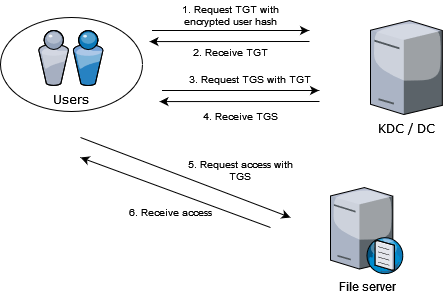

Attacking Kerberos - Kerberoasting
Introduction
Kerberoasting is a very popular attack in the Active Directory realm since over 6 years now. Attacking guard dog of Hades by Tim Meddin
Overview
In any organization that is using Active Directory, the authentication process is done via Kerberos since a while now. While Kerberos is a secure network authentication protocol, there are several gaps inherently with the way it works. To read about how Kerberos works in more detail, you can read Introduction to Kerberos post. In short, it works as follows:

Step 1: User creates an encrypted request by taking system time and encrypting it using the password hash. It sends the request to the KDC asking TGT
Step 2: KDC takes the users password hash, attempts to decrypt the request. If successful, assumes the request came from the legitimate user. Takes the users identifiers and puts it in a packet, then encrypts the packet using KDCs’ (krbtgt) own password hash and sends it to the user.
Step 3: Once the user receives the TGT, the user can go ahead and request for service tickets to access some service within the forest by sending the TGT back to the KDC to request a service ticket.
Step 4: Once the KDC receives the TGT, it attempts to decrypt it and if successful, assumes that the TGT is legitimate. It looks up the service requested, creates a service ticket which is encrypted using the service accounts password hash and sends this encrypted service ticket back to the user.
Step 5: User receives the service ticket, forwards the same to the service requesting access to its resource.
Step 6: Service receives the service ticket, attempts to decrypt the ticket and if successful, assumes that the ticket is legitimate and as per the access control lists set against the user, the service decides whether or not to provide the requested access.
That covers the overall flow of how a user goes from authenticating to requesting access to services in an organization.
Security “Loopholes”
In the entire process, from user authenticating to requesting access to services, it is good to note that nothing is sent in plaintext over the wire. Every crucial piece of information is encrypted and only the right entities can decrypt and view the contents of these encrypted packets, which is great…almost.
There are two main security “loopholes” - validation, open access to service tickets.
In Kerberos, ticket validation happens at two points - TGT with KDC and service ticket with service account. In both the cases, the validation is whether the service (KDC or the service account) is able to decrypt or not and if successful, the ticket is deemed legitimate.
Also with the way Kerberos works, by design, any user can request for tickets for any service within the forest. This means that any user can request a service ticket for any service and extract these tickets from the memory and crack them offline a.k.a kerberoast them.
Implications
As anyone is allowed to request for tickets, this creates an opportunity for an attacker to extract tickets, crack them and leverage the service account hashes to create more tickets.
Kerberoasting is the base attack that allows creation of additional tickets. If a service account hash is cracked then service tickets are created which are known as Silver Tickets. We will get into creation of silver tickets and how they are useful later.
Attack
Now that we understand how Kerberos and kerberoasting works, let’s take a look at how could one actually go about performing this attack.
-
get user list with spns -ne null 1.1. look for msDS-SupportedEncryptionTypes 1.2. you want user account and RC4 tickets
-
request ticket
-
extract ticket
-
crack em
Defense
Only understanding how the attack works helps no one, let’s take a look at how we can mitigate these kinds of attack paths. it’s good to enumerate your network as an attacker to understand whether you have such paths existing in your network. The best way would be to completely avoid these things, but we all know how well that goes. Stopping attackers to request tickets is impossible, but allowing one to move further in the network is definitely possible. We can have protection as well as detection
protection - long passwords, disallow rc4, modify msdssupportedencryptontypes to only aes detection - encryption downgrade (false positives), create honeypots